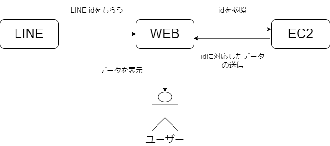

■ 今日やったこと
- WEBでLINEログインをして ID を取得したい
■ WEBでLINEログインをしてIDを取得したい

目標としてはこんな感じ：
- WEBページからLINEログインをして、LINEからユーザーIDを取得
- 取得したIDを元に、EC2内のデータベースに格納されたデータを照合
- 一致するデータをユーザーに表示
現状、LINEからEC2にデータを格納する仕組みはできているので、次はWEBでIDを取得する部分を作りたい！
■ 参考リンク
やり方は以下のLINE Developers公式ドキュメントに書いてあったので、これを参考に進める予定：
https://developers.line.biz/ja/docs/line-login/integrate-line-login/#login-flow
■ 認証URLを作成しよう
ユーザーがLINEでログインするためのボタンを作るには、いくつかのステップが必要。 その中でも特に重要なのが「CSRF（クロスサイトリクエストフォージェリ）」という攻撃を防ぐために、 ランダムな英数字の `state` を生成して、それをURLに含めること。
ただし、GitHub PagesでWEBサイトを公開するには、リポジトリをPublicにしないといけない。
そのため、ランダムな値の生成や保持といった処理は、別のPrivateリポジトリやEC2などのバックエンド側で行うのが良さそう。
GitHubではAPI機能は使えないので、本格的なトークン管理やセッション管理は、やはりEC2で実装するのが安全だと感じた。
■ 次の目標
- LIFFを使ったLINEログインの実装
- IDトークンをサーバーに送信してuserIdを抽出
- userIdを用いたDBアクセスの処理を実装
- ログイン後にデータを画面に表示する処理を完成させる